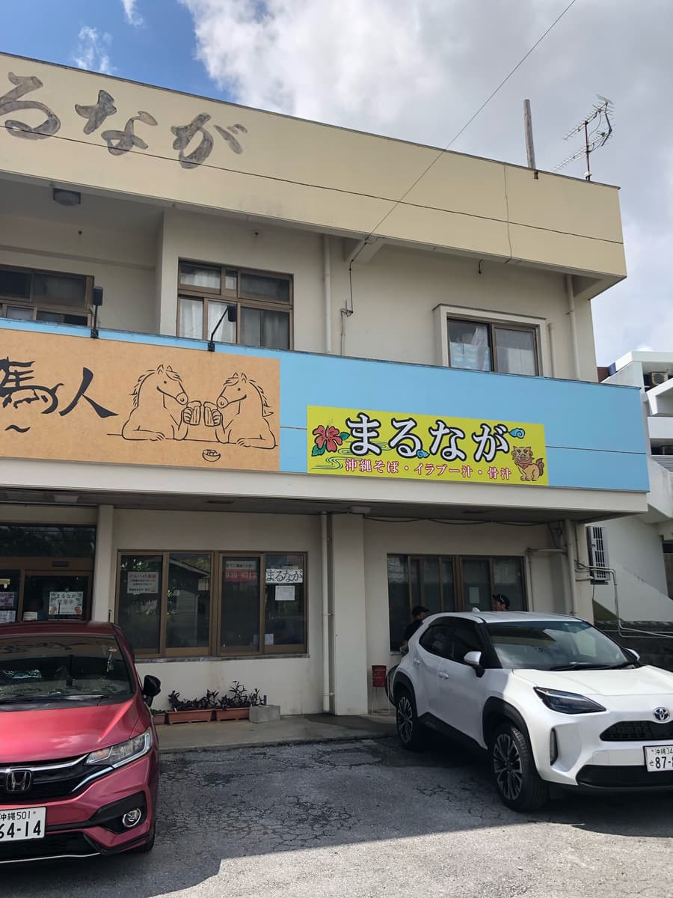
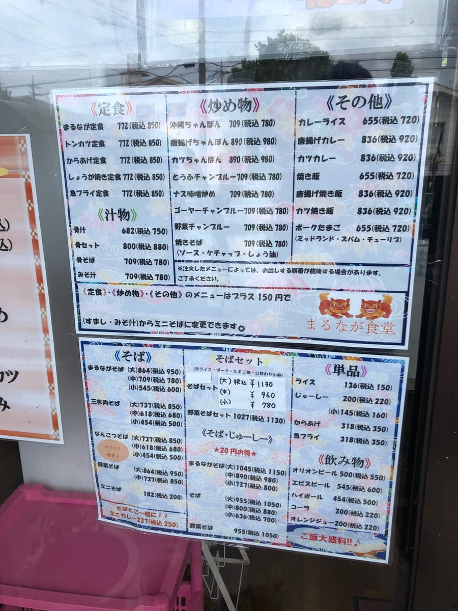
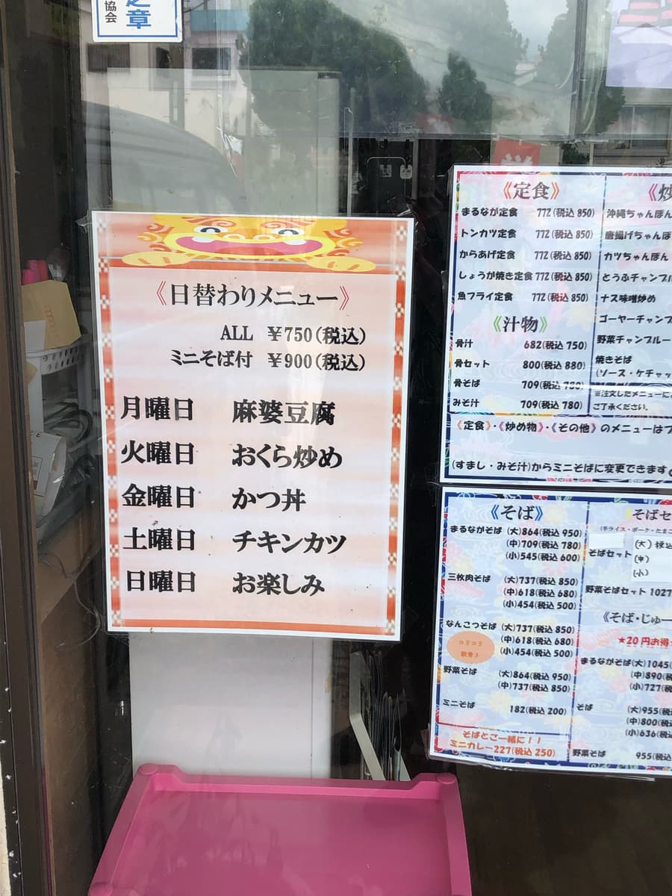
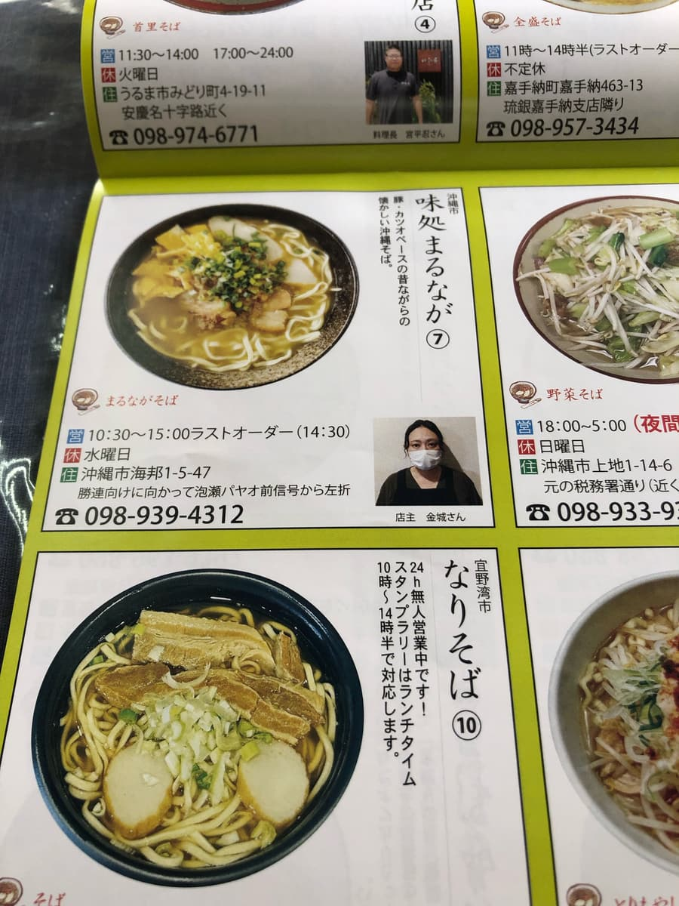
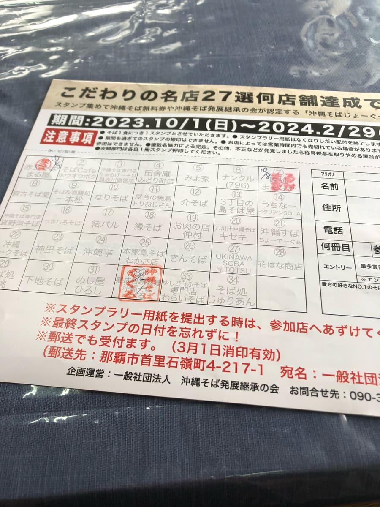
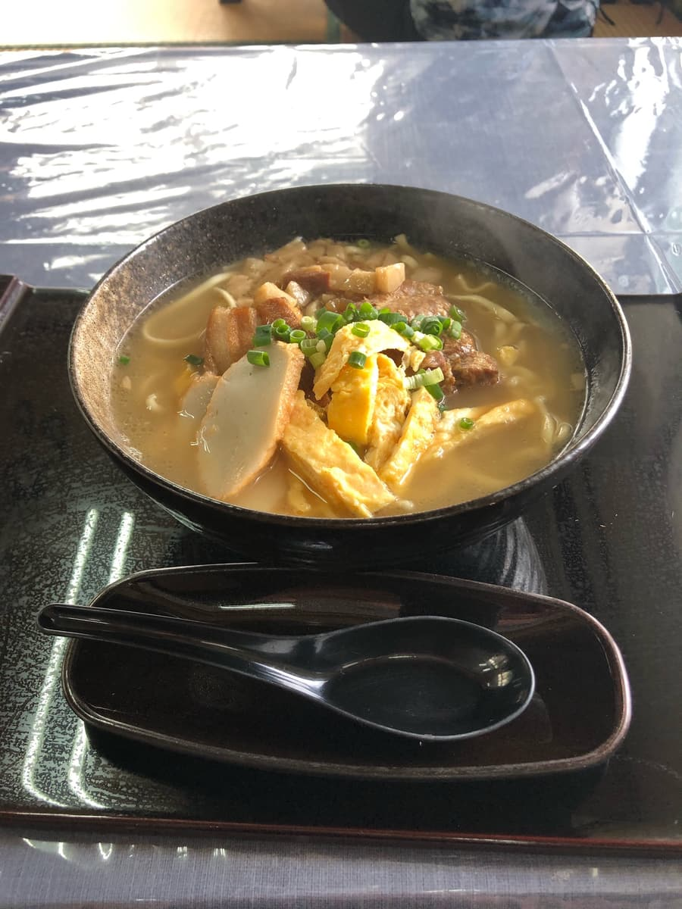
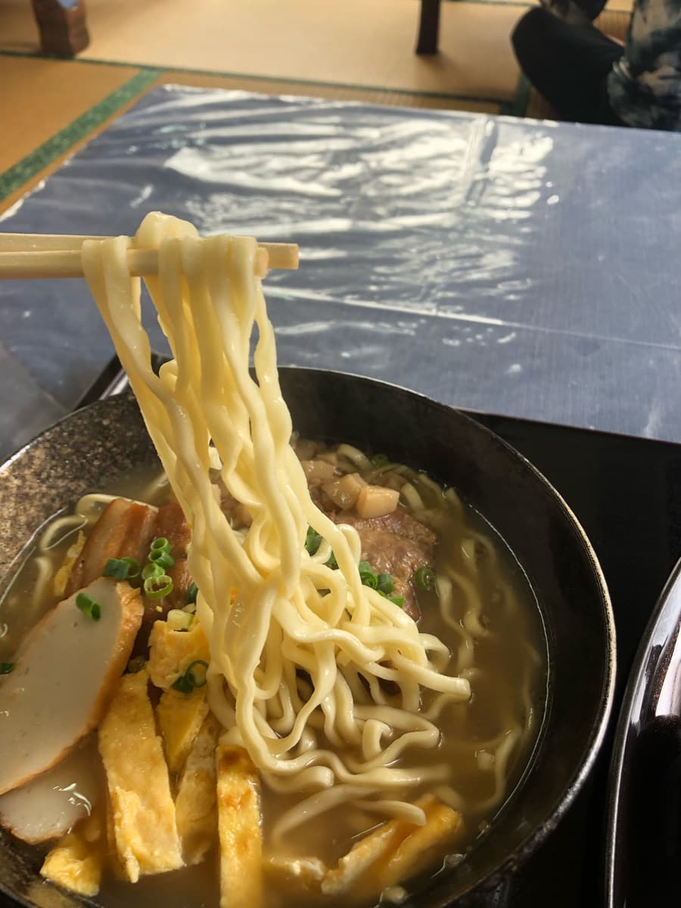

2023年10月吃的。這家店是「第13屆沖繩麵集章活動（2023.10.1～2024.2.29）」的參加店家，是我去的第3家／共34家😊



貼在入口的菜單上有各種看起來很好吃的餐點，但因為我是為了制霸沖繩麵集章活動而來，當然點了集章手冊上介紹的「丸長麵」。尺寸有大中小，這次選了「中」。

是先付款制，點了「丸長麵（中）」後，店員立刻問「是集章活動嗎？」(;^ω^) 回答「是的」後，馬上被要求出示手冊，並說「幫您蓋章」。豐見城市的久久流是「回去時蓋」最後才蓋章的方式，但這裡是一開始就幫我蓋。每家店做法不同呢😁


先喝一口湯😊 如同手冊所說明，豬、柴魚底的湯頭，不是偏向哪一邊，而是兩種味道都能感受到的成品。讓我想起「阿和瀨麵」的湯頭ｗｗ
麵條是中粗的直麵。硬度偏軟。

配料有魚板、玉子燒、三層肉、軟骨排骨，肉很軟，但有點筋感（口感偏韌）。此外還有放小骰子狀的東西，外觀讓我想「是蒟蒻嗎？」，但售票機上寫著「含背脂」，所以我想是把豬的脂肪切細放進去的。這在其他店沒看過。
評分（9分/15分）：普通好吃。是令人懷念的傳統溫和沖繩麵的感覺。從菜單來看覺得相當實惠。這次點了中份量，份量普通足夠，很滿足。
麵：★★★☆☆（3）
湯頭：★★★☆☆（3）
配料：★★★☆☆（3）